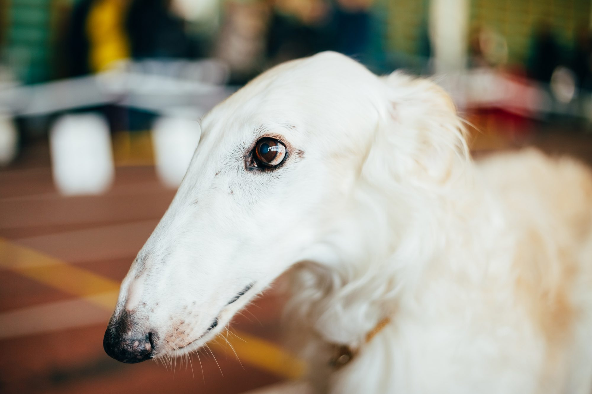
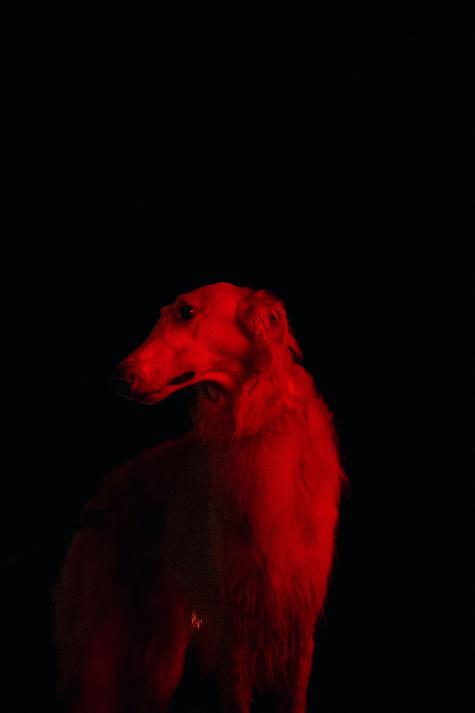
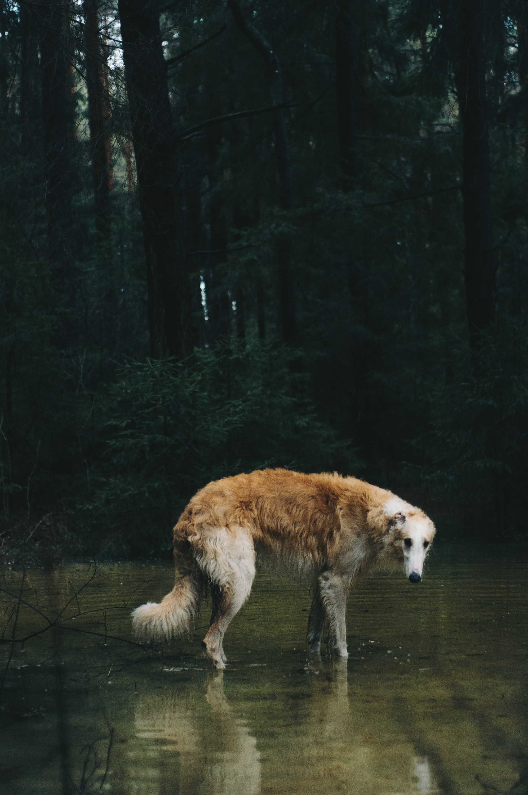

A very large breed with a Russian hunting heritage
The Borzoi’s coat is long and silky, and it can be flat, wavy, or rather curly.
The Borzoi is considered a giant breed, with adult males standing at least 28 inches and up to 32 inches high at the withers (the top of the shoulder), and weighing between 75 and 105 pounds.
Buy More infoReal hunters

Originally, Borzoi were used to hunt running game, such as wolves, foxes, and hare, over relatively open ground. They had to depend on their speed, agility, and endurance to successfully catch their prey.

The breed originated in Russia and has a noble heritage, as it was associated with the Russian aristocracy. In fact, the Borzoi was named for the Russian word for “swift.”
Let me do it for you